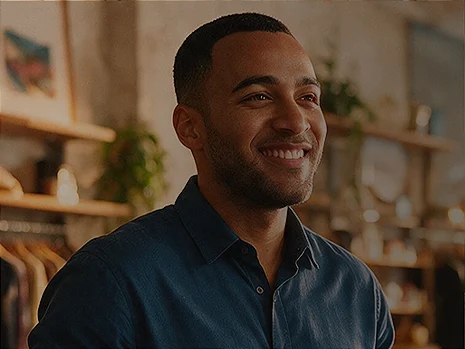
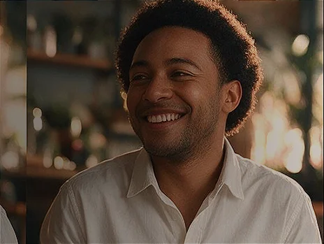
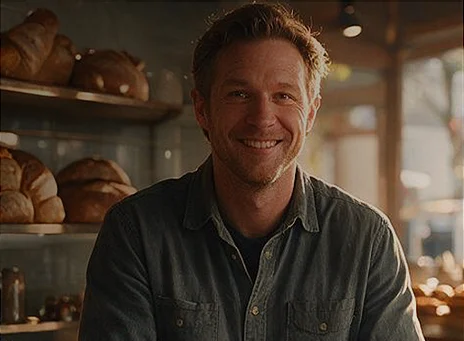
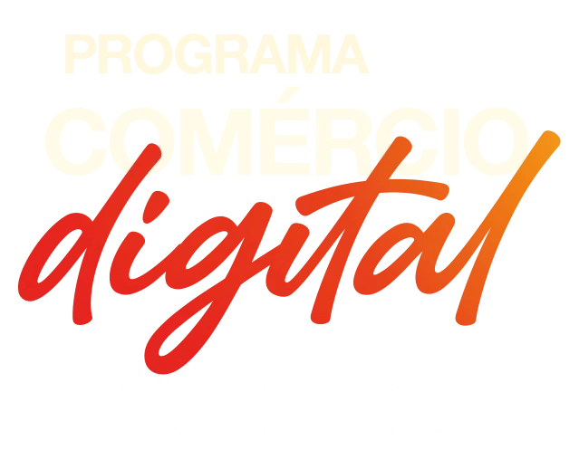

O próximo passo do comércio começa aqui.
Um novo programa para transformar e digitalizar o comércio do Vale do Aço
O Programa Comércio Digital nasce para aproximar tecnologia do empresário por meio de conhecimento, treinamentos, conscientização e acesso a soluções digitais com condições especiais.
A forma de fazer negócio também.
Tudo feito para ajudar e digitalizar!
O comércio está mudando, e a tecnologia já faz parte dessa transformação. É nesse cenário que o Sindcomércio e o Vale do Aço Digital unem forças para ajudar a digitalizar e fortalecer os negócios da nossa região.
- Treinamentos e palestras (abre o WhatsApp)
- Conteúdos em portais e redes sociais (abre o WhatsApp)
- Ações de conscientização (abre o WhatsApp)
- Acesso a produtos e soluções tecnológicas (abre o WhatsApp)
Aproximar tecnologia do empresário, facilitar o acesso a soluções, compartilhar conhecimento e contribuir para que os negócios sejam mais conectados, eficientes e competitivos.